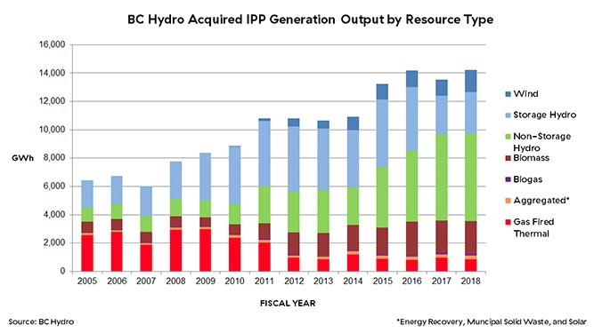
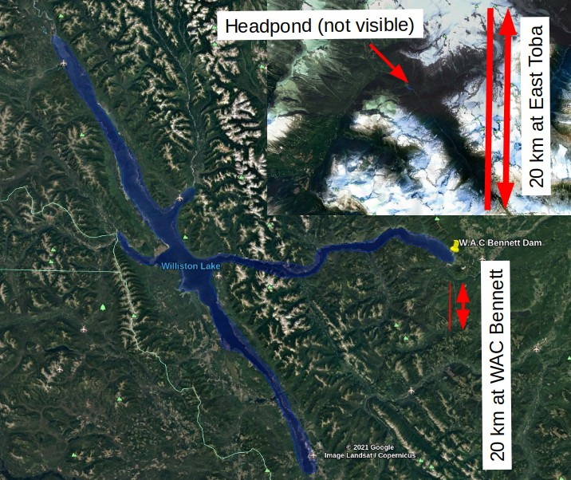
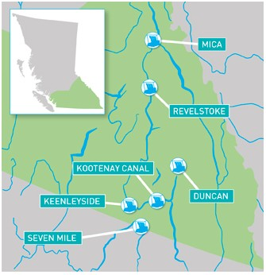
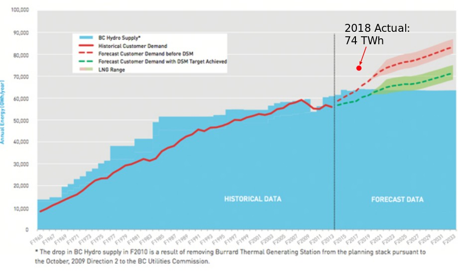

Run of River vs. Storage Hydropower in BC: A Cursory Introduction¶
To start, I’m not an expert on energy policy or history. The only firm belief I have is that no matter how we supply electricity for the province of British Columbia, the process will be angry and bitter in proportion to the financial and political capital at stake. The information below is neither complete nor rigorous, but it’s a starting point to finding out more about the current state of hydropower development in BC.
BC Energy Plan¶
In 2007, the provincial government (Liberal, Gordon Campbell) presented a mandate for clean power with the goal of energy self-sufficiency, defined as generating 90% of the province’s energy from renewables. At the time, the latest report from the International Panel on Climate Change (IPCC) was showing widespread consensus among international scientists of the effect of greenhouse gases on climate, in particular the burning of fossil fuels. Also at the time in BC, an energy shortfall was projected, as described in the 2008 Long-term Aquisition Plan (LTAP). In order to meet the projected shortfall, the plan was to issue a request for proposals (RFP) on the open market for renewable energy projects. Independent power producers competed for a limited amount of electricity purchase agreements (EPAs) from BC Hydro. Details of the energy acquisition plan can be found here, but the basic idea was to accept some cost of prioritizing renewable energy over fossil-fuel energy, reduce the risk of cost overruns typical of mega projects, and do so while pursuing environmental and social obligations and goals.
By 2009, BC Hydro awarded contracts to purchase roughly 3300 GWh of energy from the private sector, and as shown below the program resulted in more than doubling of renewable energy from private developers over the subsequent decade, while reducing the share of fossil fuel aquisition.

Criticism¶
While many of the arguments concerning the development of new energy supply in BC are presented in terms of financial impacts (environmental and social impacts are covered to a lesser extent), ultimately the battle was for control over billions of dollars in contracts. Site C is in the best interest of strong labour unions that support the NDP, and fight for fair wages and benefits for workers. Construction of IPP projects also requires the work of unionized labourers, but the project owners themselves are not crown corporations like BC Hydro, rather they are publicly traded companies like Innergex Renewable Energy, or private corporations like BluEarth Renewables. Ownership is discussed further below.
IPPs are often criticised because profits go to private rather than crown corporations, based on the idea that crown corporations are “owned” by taxpayers. The counter argument is that IPPs bear the burden of financial risk. The present value of an energy project is primarily a function of the cost of construction, the cost of capital, the demand forecast, and the resource assessment. In t he case of Site C, the original cost of $6B has inflated to $16B as of February 2021, ultimately to be paid for by both higher electricity rates as well as income tax. An analysis by Dolter et al. suggested the Site C project was not feasible when the estimated cost was roughly $11B. This kind of cost overrun would simply terminate a private project and the loss would be borne by the lender (or shareholders). The often criticised higher contract price offered to an IPP can thus be seen as an insurance cost. On the other hand, despite the greater cost of the megaproject, employing a large number of people for several years at the Site C project can be seen as a major benefit. The question remains how will $16B end up being distributed between British Columbians employed on the project, and multinational corporations such as the main civil works contractor, the Spanish company Acciona.
The Clean Power Call received criticism, in particular the contract price offered to power developers, the accuracy of projected demand, and the environmental and social impact of work in aquatic ecosystems. The BC Sustainable Energy Association disputed the allegation that BC Hydro was instructed to fabricate demand. The provincial government formed in 2017 (NDP, Horgan) officially criticised the LTAP in 2019 as one that would cost ratepayers more than 16 billion over 20 years. BC MLA Andrew Weaver (Green) disputed this criticism, pointing out that an amendment to the Clean Energy Act would classify fossil-derived energy as ‘clean electricity’.
Site C was (and continues to be) criticised for many of the same reasons as IPPs, such as cost, and environmental and social impacts. For a broader review of impacts of the Site C project, see Reassessing the Need for Site C (Hendriks et al., 2017). The BC Sustainable Energy Association also contributed to the debate over Site C, pointing to broad evidence that cost estimates for megaprojects tend to be systematically biased. Zhang et al. (2019) studied the cost growth trends in large public projects, finding that P3 consistenly outperforms traditional models in cost and schedule.
Comparison¶
Perhaps this is an unfair comparison, but the figure below presents a comparison of BC’s largest reservoir, formed by the WAC Bennett dam, against the largest run-of-river IPP project included in the CPC. Note that the GM Shrum station at the WAC Bennett dam, combined with the Peace Canyon facility just downstream, generate on average 17,500 GWh per year, roughly 40% of BC Hydro’s total energy generation (100x factor difference). In contrast, the East Toba project in the inset figure generates 700 GWh per year. Note the vertical red lines represent a distance of approximately 20km. The flooded area of Williston Lake covers an area of roughly 1800 \(km^2\), while the head pond at East Toba (not visible) is \(<< 1km^2\). Run-of-river projects have comparatively small footprints, however some groups argue that in large numbers, and developed in ‘clusters’ can result in cumulative environmental impacts.

IPPs and Project Ownership¶
Private projects like the Toba Montrose Hydroelectric Project include agreements with the local First Nations (in this case the Klahoose First Nation) establishing the acknowledgement of rights and title to the land, specifying royalties throughout the project life, and specifying construction contracts and employment of First Nations people. First Nations are part owners in other IPP projects, such as the Kwoiek Creek hydroelectric project, which is an equal partnership between the Kanaka Bar Band and Innergex Renewable Energy. The Tla-o-qui-aht nation on the other hand are the majority owners of the Haa-ak-suuk hydropower project on Vancouver Island. The agreements are varied, and time will tell what arrangements will ultimately prove most beneficial to First Nations.
The Clean Energy Act created provisions for revenue sharing between First Nations partners in renewable energy projects, and a list of IPPs involved in revenue sharing agreements, including the agreements themselves, is made publicly available by the BC Government.
Optimization of Resource Usage¶
At the time of the Clean Power Call, BC Hydro was a net-importer of electricity. Energy trading allows BC Hydro to optimize the use of water in its reservoirs among neighbouring regions with diverse energy sources. While the capacity existed to satisfy demand in British Columbia at the time, the province was importing more energy than it exported because the cost of purchasing non-renewable energy sources from out of province was at times cheaper than dispatching energy from within BC. Much of BC’s electricity generating capacity is in a few large reservoirs in the Columbia and Peace regions, whose inflows are characterized by large volumes of snowmelt in spring, and relative scarcity in winter and late summer.

Projected Electricity Demand¶
Fueling the criticism that BC Hydro was “forced to pay too much for energy it didn’t need” was the 2008 great recession, when energy consumption in Canada fell 3%, and 5% in the subsequent year, according to the National Energy Board. BC Hydro has also been criticised for inflating energy demand projections in blog-type publications that have some value in raising interesting points, but are not held to the same standard as peer reviewed academic research.
The claim that BC Hydro inflated demand in order to justify the Site C project is unfairly dismissive of the efforts of many of the BC’s top scientists and engineers working on the enormously difficult task of long-term demand forecasting. The figure below is a demand projection from BC Hydro. The red point was added by me to show that the problem of forecasting is enormously difficult. Criticising forecasts is easy because it is years before hypotheses can be tested. Many critics point to future demand from an LNG market that may or may not materialize, or economic recessions (that occurred in 2008, rebounded through 2019, catered in 2020 with the pandemic, etc.) The mechanisms governing long-term energy demand are inherently random processes, and they cannot be predicted deterministically.
The Canadian Centre for Policy Alternatives also criticized demand projections, a key point in their argument being the viability of the LNG industry that the provincial goverment (Liberal, Christy Clark) was championing. Several projects are currently in development.

Firm vs. Non-Firm Energy¶
How did BC Hydro structure the CPC to incentivize electricity generation when it was most needed? One way was to offer scheduled price incentives at both seasonal and daily levels. The incentives are described in the plot below, where it’s shown that energy offered in spring is less valuable than winter. Most of BC’s electricity comes from a few large reservoirs, including the WAC Bennett in the Peace region, and the Mica, Revelstoke, and Keenlyside dams in the Columbia river basin. Similar timing and duration of spring snowmelt means there is a lot of water available while energy demand for heating homes is decreasing in spring as temperatures increase.
import pandas as pd
import numpy as np
import matplotlib.pyplot as plt
Seasonal and time-of-day adjustment data is from the BC Hydro RFP issuance documents here.
fe = pd.read_csv('data/firm_energy.csv')
fe.plot()
<AxesSubplot:>
Clean Power Call Awards¶
Below is a table of successful projects from the 2007 Clean Power Call (data source: BC Hydro), including hydro, wind, biomass, waste heat, and for some reason coal.
df = pd.read_csv('data/CPC.csv')
list(set(df['ENERGY SOURCE']))
['Wind', 'Coal / Biomass', 'Water', 'Waste Heat', 'Biomass', 'Biomass / Other']
# filter just for the hydropower sources
hydro = df[df['ENERGY SOURCE'] == 'Water'].copy()
hydro.head()
| BIDDER NAME | PROJECT NAME | NEARBY CITY | ENERGY SOURCE | PLANT CAPACITY (MW) | TOTAL ENERGY (GWH/YR) | |
|---|---|---|---|---|---|---|
| 0 | Plutonic Power Corporation | East Toba and Montrose Hydroelectric Project | Powell River | Water | 196.0 | 702 |
| 4 | 3986314 Canada Inc. | Canada - Glacier / Howser / East - Project | Nelson | Water | 90.5 | 341 |
| 6 | Kwalsa Energy Limited Partnership | Kwalsa Energy Project | Mission | Water | 85.9 | 384 |
| 7 | Anyox Hydro Electric Corp. | Anyox and Kitsault River Hydroelectric Projects | Alice Arm | Water | 56.5 | 242 |
| 9 | Upper Stave Energy Limited Partnership | Upper Stave Energy Project | Mission | Water | 54.7 | 264 |
fig, ax = plt.subplots(1, 1, figsize=(8,5))
ax.plot(hydro['PLANT CAPACITY (MW)'], hydro['TOTAL ENERGY (GWH/YR)'], 'bo')
ax.set_xlabel('Plant Capacity [MW]')
ax.set_ylabel('Total Energy (Annual) [GWh]')
Text(0, 0.5, 'Total Energy (Annual) [GWh]')
total_energy = hydro['TOTAL ENERGY (GWH/YR)'].sum()
print(f'Total energy generation is {total_energy} GWh/year for {len(hydro)} projects')
Total energy generation is 3077 GWh/year for 30 projects
Note: this esimate is a ‘back of envelope’ figure, a very cursory estimate. There are many more details in the procurement process that affect the actual amounts paid to IPPs, for a more detailed analysis, read the Energy Aquisition Plan, specifically the Price Levelization Model.
EPA contracts were typically for 20 years, and averaged \$100/MWh. The present value of the contracts is as follows, assuming a discount rate of 5%.
import numpy_financial as npf
mean_annual_energy = total_energy * 1000 # Total CPC energy contracts, GWh/year, convert to MWh/year
avg_contract_price = 100 #$100/MWh
# mean annual costs for 20 year contract, all projects
annual_costs = [mean_annual_energy * avg_contract_price for y in range(20)]
# calculate the net present value of the EPA contracts
npv = npf.npv(rate=0.05, values=annual_costs)
print(f'The NPV of the 2007 CPC is ${npv/1E9:.1f}B')
unit_energy_npv = npv / (mean_annual_energy)
print(f'The present value unit cost of {mean_annual_energy/1E3:.0f} GWh annual energy supply from the CPC is ${unit_energy_npv:.0f}$/MWh.')
The NPV of the 2007 CPC is $4.0B
The present value unit cost of 3077 GWh annual energy supply from the CPC is $1309$/MWh.
Estimated Cost of Site C¶
According to BC Hydro, the 1100 MW capacity Site C project is estimated to generate 5100 GWh (mean annual).
The current estimated capital cost of Site C is \\(16B, roughly \\\)10B greater than the original estimate. (CBC)
Admittedly, the comparison below is likely too simplified to be meaningful, but it raises the question of how such comparisons might be improved?
siteC_annual_energy = 5100 * 1000 # convert mean annual energy to MWh
siteC_unit_cost = 16E9 / siteC_annual_energy
print(f'The present value *construction* cost of {siteC_annual_energy/1E3:.0f} GWh annual energy supply in the CPC is ${siteC_unit_cost:.0f}/MWh')
The present value *construction* cost of 5100 GWh annual energy supply in the CPC is $3137/MWh
Discussion Question¶
Comparing the costs and benefit of mega projects vs. smaller distributed energy generation has been the focus of vigorous debate for decades.
These debates often focus primarily on finance, which despite being difficult to make accurate estimates, are still easier to quantify than environmental and social aspects.